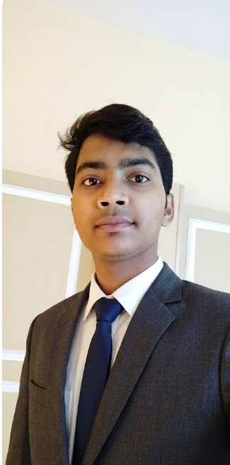

Python Developer | AI/ML Developer | Data Science Enthusiast

I'm a Computer Science (Data Science) student and AI/ML Developer
passionate about building intelligent applications using
Machine Learning, Deep Learning and Computer Vision.
I have experience in developing AI-based projects including
Sign Language Recognition System using Python, Machine Learning
and Computer Vision.
I enjoy solving real-world problems and creating practical
AI solutions through continuous learning and innovation.
Chhattisgarh Swami Vivekanand Technical University (CSVTU), Bhilai, Chhattisgarh
Indian Institute of Technology (BHU), Varanasi, Uttar Pradesh
January 2025 - June 2025
Developed Sign Language Recognition System using
Machine Learning and Computer Vision.